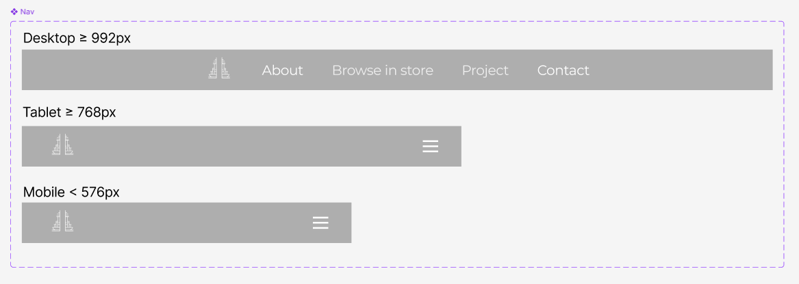
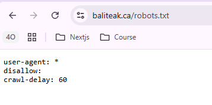

Project Scope
Sometimes customers don’t walk away because the product isn’t good. They leave because the digital experience is slow, confusing, or uninspiring.
When a website feels heavy or difficult to navigate, even the most beautifully crafted products can lose their appeal. Attention fades. Interest drops. And the purchase never happens.
We redesigned the experience to be faster, cleaner, and more intuitive—ensuring that nothing stands between great craftsmanship and the customer’s decision to buy.
Duration
2 Months
Timeline:
Phase 1:
Discovery & Audit
Phase 2:
Strategy & UX Planning
Phase 3:
UI Design
Phase 4:
Development (WordPress Implementation)
Phase 5:
Testing & Launch
Design Comparison
Old Design

New Design

Context & Background

The website represents Bali Teak, a premium furniture brand offering solid teak wood furniture. The primary audience includes homeowners, interior design enthusiasts, and customers in Halifax who are looking for high-quality, ethically sourced furniture with a strong cultural story.
The original website was intended to:
- Introduce Bali Teak as a furniture brand
- Showcase its teak furniture collections
- Encourage users to explore products and get in touch
What Changed & Why


Mobile Responsive

Another Pages
About Page

Home Owner Page

Quick UX Audit
Why a Redesign Was Needed?
| Area | Issue | New Direction |
|---|---|---|
| Visual Design |

Outdated visual style that did not reflect a premium brand. |

Modern, premium visual language Clean layout, consistent typography, refined spacing, and a restrained color palette to reflect a high-end brand. |
| Information Hierarchy |
Products were not clearly showcased, reducing product visibility. |
Product-first presentation Prominently showcase products using high-quality imagery and clear categorization to improve visibility and clarity. |
| Product Presentation |
Poor information hierarchy, making the content difficult to scan. |
Clear information hierarchy Structured content with strong headings, concise copy, and intentional spacing for easier scanning. |
| Responsiveness |
Layout was not optimized for mobile devices. |
Mobile-first responsive layout Optimized layouts, spacing, and typography to ensure a seamless experience across all devices. |
Key Screen & Information Architecture
Sitemap Iteration Process:
There is many feature and page that we plan to build, but we need to priortize what feature and page that we need to build first according to the client needs.
Loading sitemap...

Simple Design System & Variant Prototyping
Button Component Variants

Color Palette

Icons
Gallery & Slider

Responsive Navigation

Typography


Figma Techniques
- Component
Property
- Auto
Layout
- Component
Variation
- Nested
Component
Implementation Challenges
Bridging UI Design with Elementor
The main challenge was bridging the gap between the UI design and the limitations of Elementor during implementation. Some layouts initially struggled with responsiveness, particularly when relying solely on Elementor's container system. I helped restructure these sections using Flexbox and CSS Grid to achieve more flexible responsive behaviour.
Designing Around Available Components
I also considered Elementor's available components during the design process to ensure that proposed UI patterns, such as sliders and carousels, could be realistically implemented without unnecessary custom development.
Establishing a Visual Identity
With a limited visual identity and a short delivery timeline, I developed several colour directions and presented them to the client before establishing a simple and consistent visual foundation that could be applied across the website.
Keeping Documentation Fit for Purpose
The limited timeline also required prioritisation in the design documentation. Rather than creating an overly complex design system that would be difficult to maintain within the project scope, I focused on documenting the essential decisions needed for implementation. For example, the typography system was kept intentionally simple while still providing enough structure for consistent use across the website.
Prioritising Quality Within the Timeline
Not every aspect could be refined to its ideal state within the available timeframe. To protect the quality of the launch, we prioritised the most essential design, responsive, accessibility, and technical improvements first. Remaining opportunities and refinements were documented as potential next steps rather than compromising the launch by trying to address everything at once.
Balancing Quality, Feasibility & Speed
Throughout the project, I balanced visual quality, implementation feasibility, and delivery speed, while also ensuring that the Elementor setup, licensing, and custom code were suitable for ongoing maintenance and future improvements.
SEO & Technical Optimisation
Alongside the visual redesign, I reviewed the website's structure and technical SEO foundation to identify areas for refinement. The review covered heading hierarchy, responsive behaviour, metadata, image formats, sitemap configuration, and crawlability.
Finding:
The overall content structure was in place,
but heading hierarchy was not fully consistent
across pages. Some pages did not have a clearly
defined primary heading, including instances
where an <h1> was missing.
Optimisation: I refined the heading structure to create a clearer relationship between page titles, section headings, and supporting content. This improves content clarity, accessibility, and semantic understanding for search engines.
Finding: Core metadata was already present, while several optional SEO elements were missing and could be further optimised.
- Title: Present
- Canonical: Present
- Viewport: Configured
- Meta Description: Opportunity for optimisation
- Robots Meta: Not detected
- Open Graph: Opportunity for optimisation
Optimisation: The existing metadata was reviewed and opportunities were identified to improve search-result descriptions, crawler directives, and social sharing previews.
Finding: The website was already reasonably responsive across different screen sizes, with some areas requiring further refinement for consistency.
Optimisation: I refined spacing, typography, component behaviour, and content positioning across desktop, tablet, and mobile breakpoints to provide a more consistent experience.
Finding: An XML sitemap was already available and correctly exposed the website's relevant content for search engine discovery.
I reviewed the sitemap structure and content types to verify that the configuration was aligned with the website's current pages and content.

Finding: Public pages were accessible to search engine crawlers, and no major crawlability restriction was identified.
The robots.txt configuration was
reviewed to verify that crawler access was
appropriately configured for the website.

Finding: The website used a mix of image formats, with not all assets delivered in modern formats such as WebP.
Optimisation: Image assets were reviewed for opportunities to reduce file size through more efficient formats, appropriate dimensions, and compression while maintaining visual quality.
SEO considerations were incorporated into the redesign and implementation process alongside the visual and responsive improvements. The review helped ensure that page structure, metadata, crawlability, sitemap configuration, and image optimisation were considered as part of the overall website foundation.